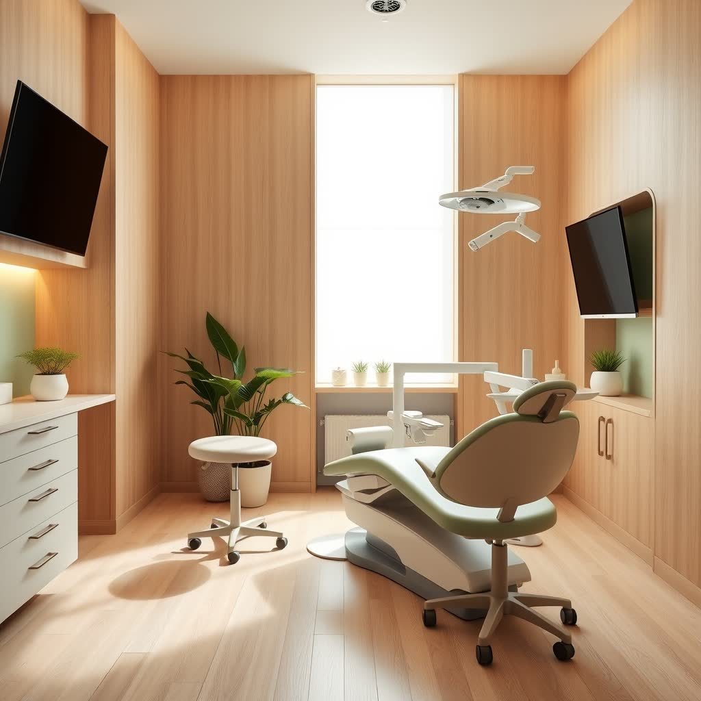
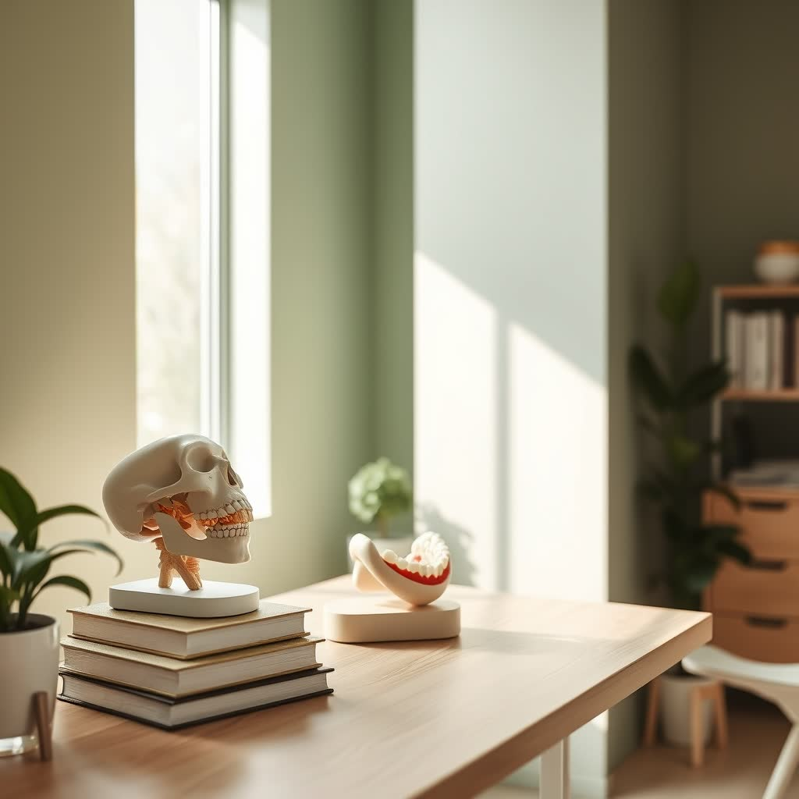
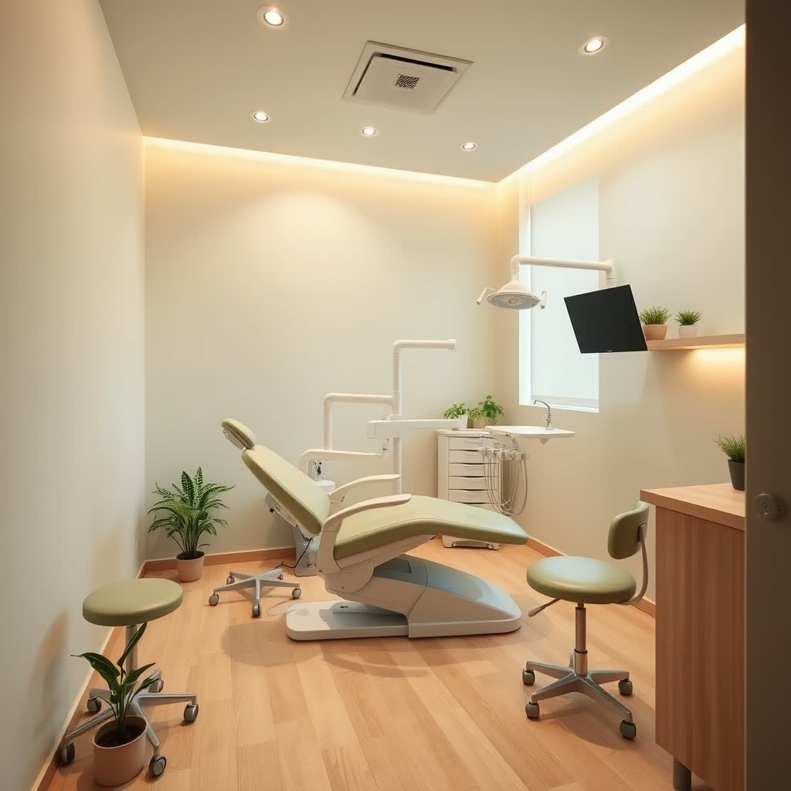
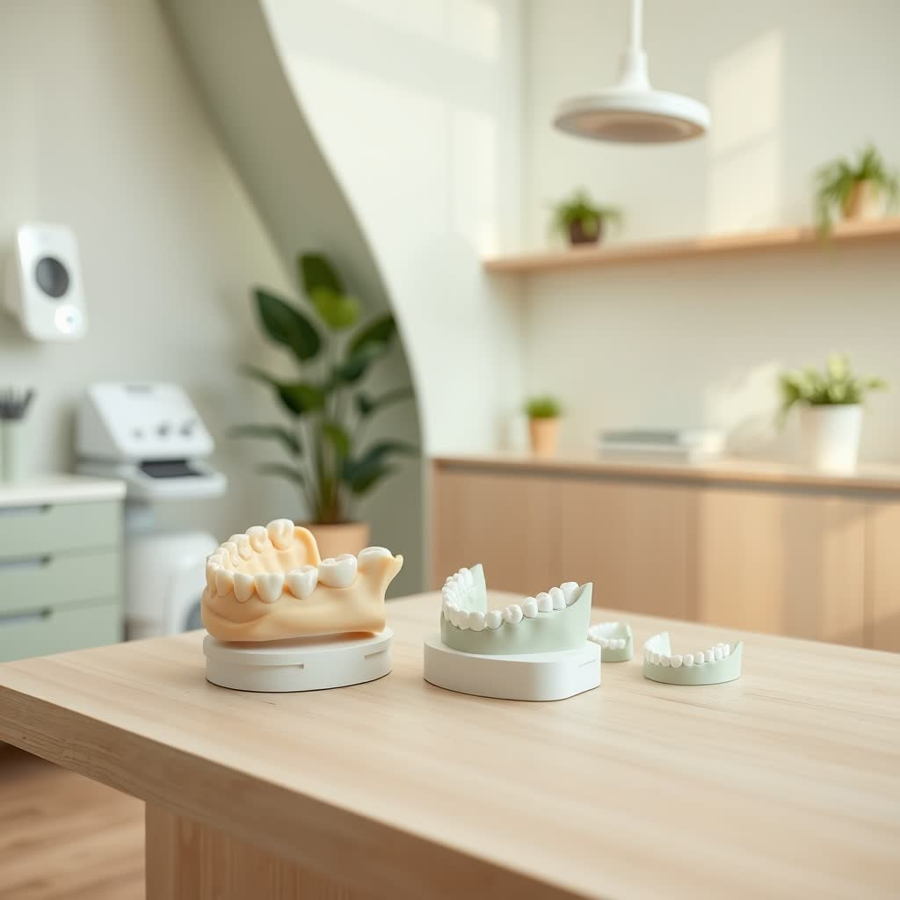
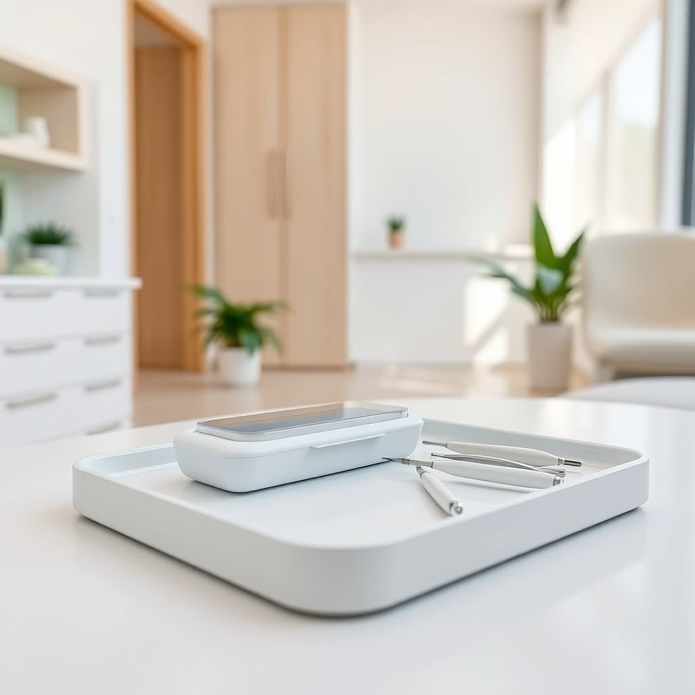
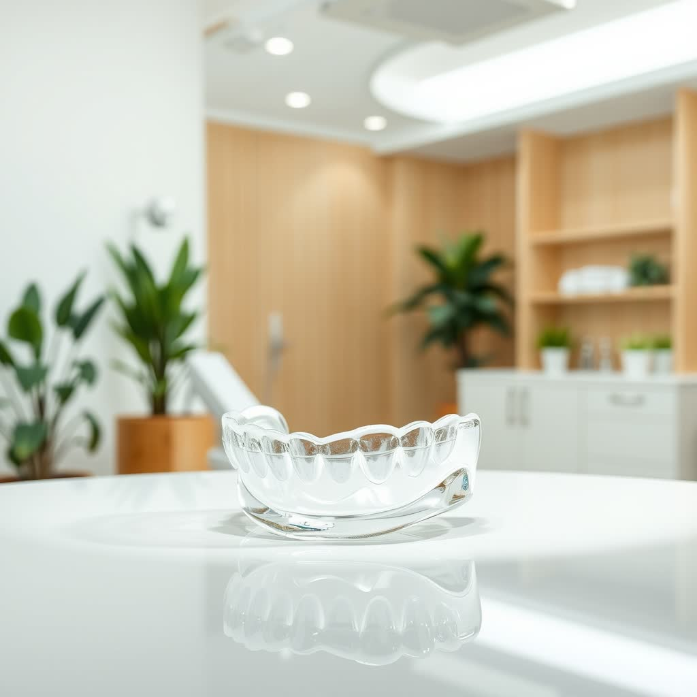
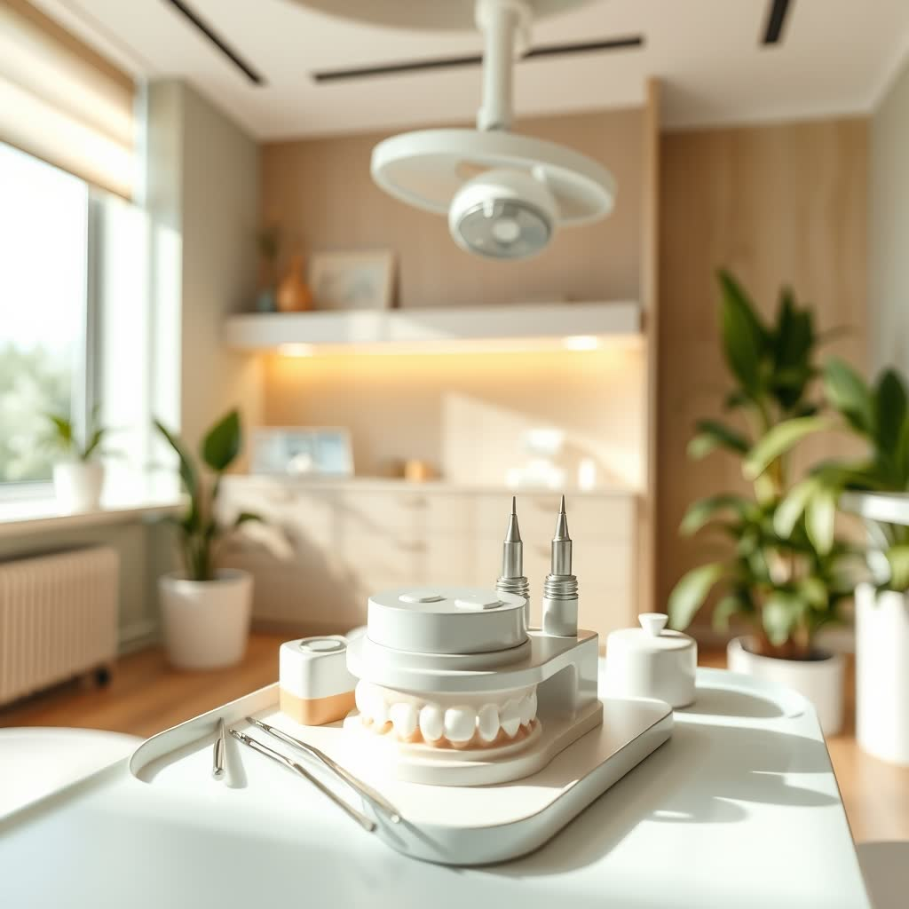
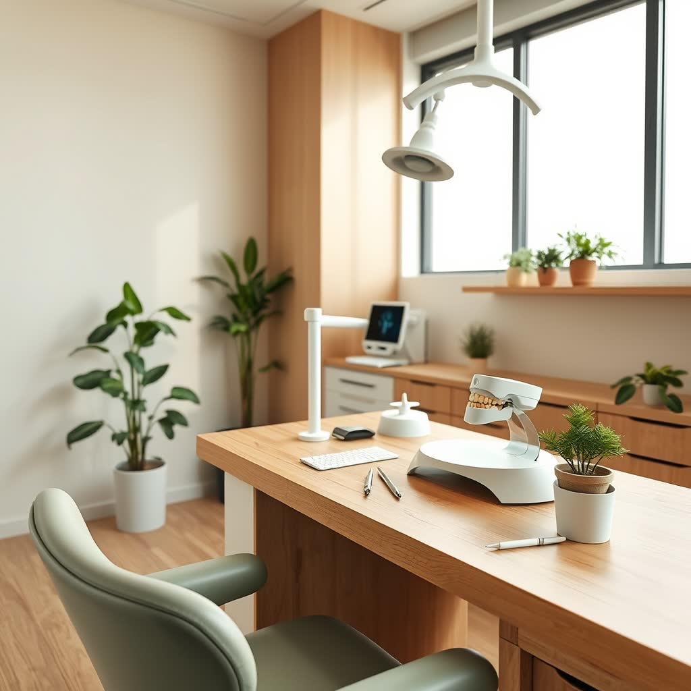

DTM, cannabis terapêutica e odontologia do sono integradas num diagnóstico que enxerga você por inteiro, não apenas a queixa do momento.


Cirurgião-dentista formado pela UFPB, Dr. Otacílio construiu sua trajetória entre o hospital, a universidade e a pesquisa, com especialização em DTM e Dor Orofacial e pós-graduação em Cannabis Sativa.
Três anos no Serviço de Controle da Dor Orofacial do HULW lhe ensinaram que cada paciente carrega uma história, e que a escuta clínica é tão decisiva quanto o protocolo. Premiado no II CICMED e integrante do corpo editorial da Revista Brasileira de Cannabis.
"Dor crônica sempre tem uma origem. Quando encontramos essa origem, o tratamento muda de patamar."
Dor crônica, sono e uso de cannabis raramente aparecem isolados. Minha prática integra essas três áreas num único diagnóstico.
Diagnóstico e tratamento das disfunções da ATM, bruxismo, travamento mandibular e dores crônicas na face, com protocolos baseados em evidência.
Prescrição e acompanhamento de fitocanabinoides dentro das diretrizes do CFO, com indicação precisa, dosagem individual e redução de danos.
Abordagem especializada para ronco, apneia obstrutiva e insônia, com aparelhos intraorais sob medida e protocolo integrado quando necessário.

É uma resposta legítima do sistema nervoso, e merece escuta, respeito e preparo. Cada etapa é explicada antes de ser realizada e você decide o ritmo.
Primeiro encontro sem procedimentos: uma conversa para entender sua história e desenhar um plano que faça sentido.
Quando há indicação, ansiolíticos prescritos reduzem a ansiedade, mantendo você acordado, confortável e no controle.
Fitocanabinoides podem ser indicados como recurso complementar no manejo da ansiedade, após avaliação individualizada.
Técnicas de baixo impacto e dispositivos modernos que reduzem o estímulo doloroso e a percepção da picada.
Sua história e seus gatilhos vêm antes do protocolo.
Investigação da origem da queixa, não apenas do sintoma.
Metas realistas, etapas compreensíveis e planejamento transparente.
Presencial em João Pessoa ou por teleorientação para todo o Brasil.

DTM e oclusão
Clareamento
Placa e sono
Restaurações
Reabilitação oralProfissional sensacional, muito atencioso e explica minuciosamente cada detalhe do tratamento. Atendimento de excelência, obrigado Dr. Otacílio!
Tinha muito medo de dentista por experiências anteriores, mas o Dr. Otacílio foi muito atencioso e profissional. Agora só vou nele!
Excelente. Profissional muito atencioso e cuidadoso comigo. Além de tudo, resolveu um problema que eu sofria há anos. Sou muito grata.
Excelente atendimento, muito esclarecedoras as tratativas de redução de danos e receituário para uso medicinal de cannabis.
Profissional atencioso e minucioso em seu trabalho. Passa a segurança que a gente procura em um atendimento odontológico.
Foi ótimo! Resolveu 100% dos meus problemas e agora estou tratando meu bruxismo com óleo. Recomendo demais.
Sim. O atendimento é realizado dentro das diretrizes do Conselho Federal de Odontologia (CFO) e das regulamentações da ANVISA para fitocanabinoides. Quando há indicação clínica, emitimos laudo e documentação para importação. O conteúdo é informativo e não constitui incentivo ao uso.
Com certeza. Medo de dentista é uma resposta legítima do sistema nervoso. O primeiro encontro pode ser uma consulta de acolhimento, sem procedimentos, e há recursos como sedação oral consciente quando indicada. Você decide o ritmo, sem julgamento.
A teleorientação está disponível para todo o Brasil, voltada principalmente à orientação sobre uso seguro de cannabis e à avaliação inicial. Avaliamos histórico de uso, vias de administração, dosagem e possíveis interações, com foco em segurança e qualidade de vida.
O tempo é dedicado a cada paciente, sem pressa. A primeira consulta costuma ser mais longa por priorizar a escuta e o diagnóstico criterioso antes de qualquer plano de tratamento.
Sim, você é bem-vindo a levar alguém de confiança, especialmente se isso ajuda a deixá-lo mais à vontade durante a consulta.
Os valores variam conforme a especialidade e o plano de tratamento construído individualmente. O melhor caminho é conversar pelo WhatsApp, onde detalhamos cada caso com transparência antes de agendar.
Do dia a dia à alta complexidade: clínica geral, dentística, periodontia e prótese, sempre partindo do mesmo ponto, entender a origem antes de tratar o sintoma.
Agende presencialmente em João Pessoa ou por teleorientação para todo o Brasil. O primeiro passo é simples: uma conversa.